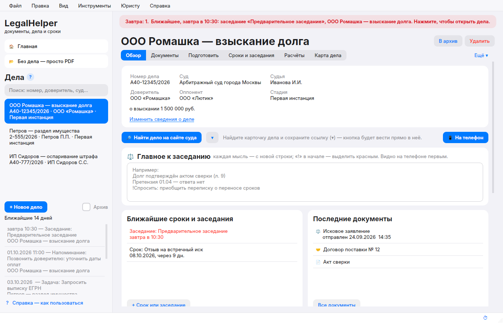

Помощник для любого юриста · бесплатно
Меньше рутины.
Меньше рутины.
Всё под контролем:
срокизаседаниядокументыдела
LegalHelper экономит часы каждую неделю: сам помнит сроки и заседания, складывает все документы дела в один файл и готовит бумаги по шаблонам. Вы занимаетесь правом — рутину берёт программа.
Скачать LegalHelperдля Windows 10 и 11
Всегда последняя версия — … · обновления потом ставятся сами
📱 Программа устанавливается на компьютер с Windows — откройте эту страницу на компьютере. На телефоне дела читаются через Яндекс Диск.
Четыре вещи, ради которых её ставят
Без лишнего: только то, что каждый день нужно юристу.
⏱️
Экономия времени
- Иск, ходатайство, жалоба — по шаблону за минуту
- Word, сканы, PDF — перетащили, и всё в одном файле
- Поиск по всем документам дела за секунду
🗓️
Планирование
- Заседания и процессуальные сроки в одном календаре
- Напоминания всплывают в нужную минуту
- Расчёт сроков с выходными и праздниками
🗂️
Структурирование
- Одно дело — одна папка и один PDF
- Суды, инстанции, стороны, заметки — по полочкам
- Никаких лишних копий и потерянных файлов
🤝
Помощник для любого юриста
- Понятно с первого дня: обучение со стрелками
- Памятка к заседанию — на телефоне
- Бесплатно, данные только у вас
Вместо десяти окон — одно
Обычно
- Папки с файлами по всему компьютеру
- Сроки в блокноте и в телефоне
- Word, отдельный PDF-редактор, калькулятор
- Перед заседанием — искать нужный лист
→
С LegalHelper
- Все документы дела — в одном PDF
- Сроки и заседания напомнят сами
- Редактор, шаблоны и расчёты — внутри
- Памятка к заседанию — в кармане

Установка — 3 шага
Один раз, 10–20 минут. Дальше программа обновляется сама.
1
Скачайте
Кнопка «Скачать» — в папке «Загрузки» появится LegalHelper-main.zip.
2
Распакуйте
Правой кнопкой по архиву → «Извлечь все…» → «Извлечь».
3
Запустите
В открывшейся папке дважды щёлкните «УСТАНОВИТЬ» и подождите — ярлык появится сам.
Если Windows покажет «Windows защитила ваш компьютер» — «Подробнее» → «Выполнить в любом случае».